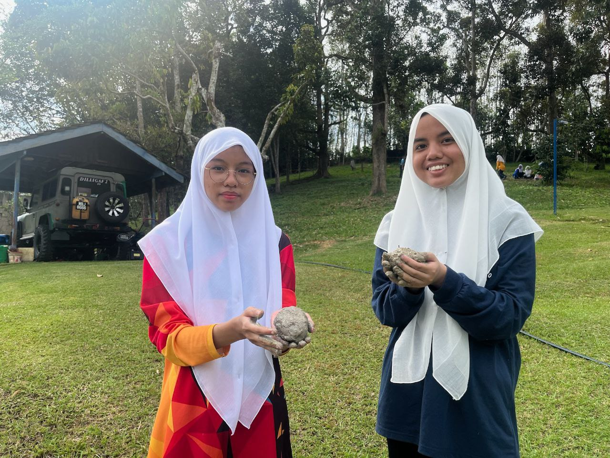

Keeping the words in my heart, I decided to do some new changes in my life, the name's given is Nurul Azirah
a student from Uitm Rembau who's pursuing a degree in Information Science Library Management.

More About Myself
Currently I am 20 years old who's turning 21 this year.
I graduated from a high school with an honorable results.
I can adapt easily to the new things and very much eager to learn anything new.
In progress of learning another language such as Arabic.